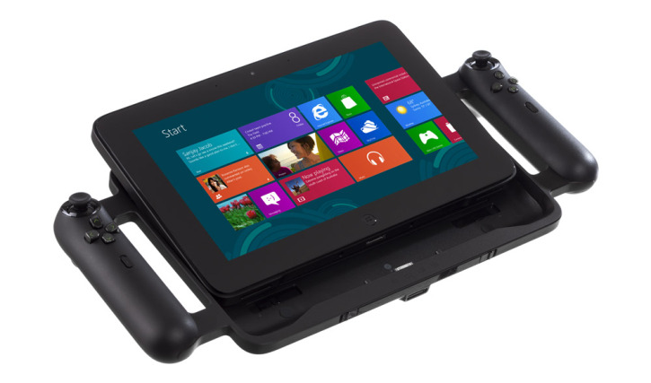
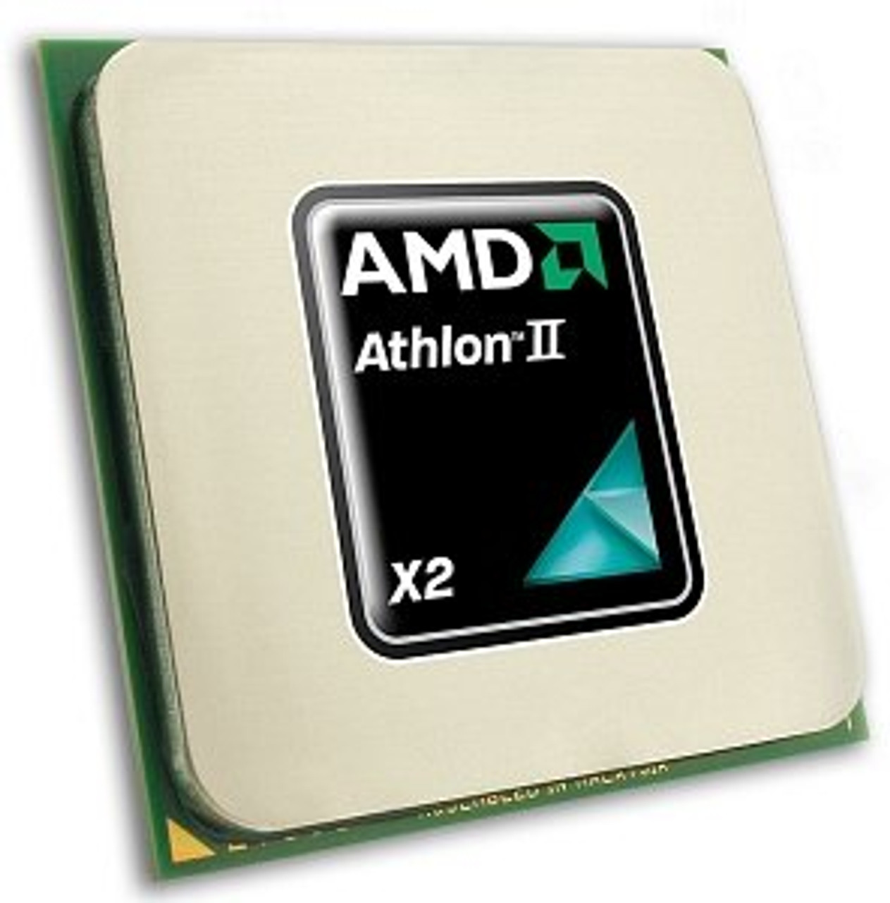
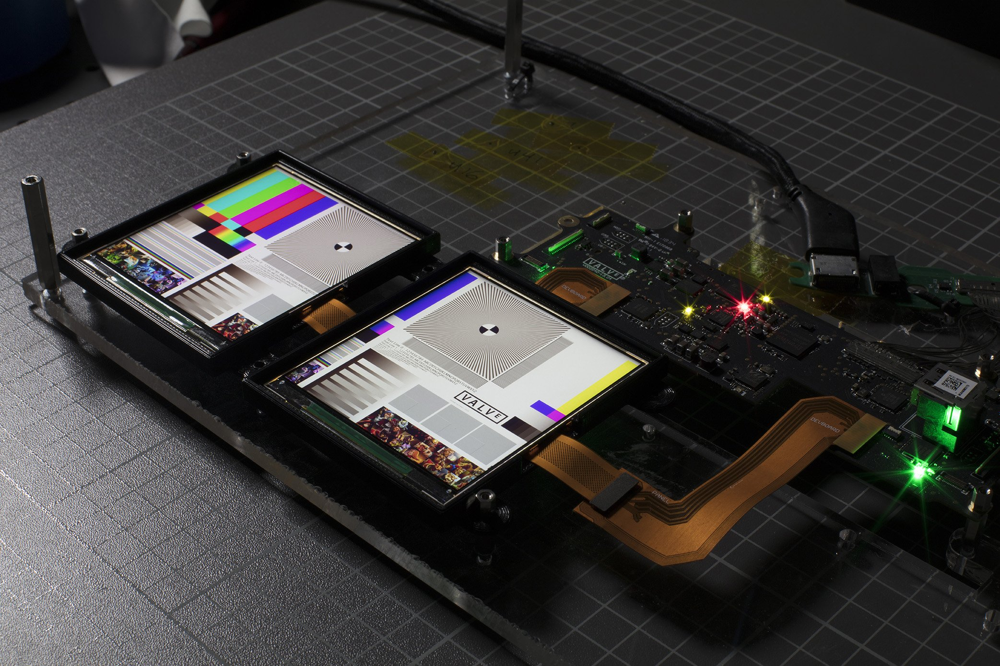
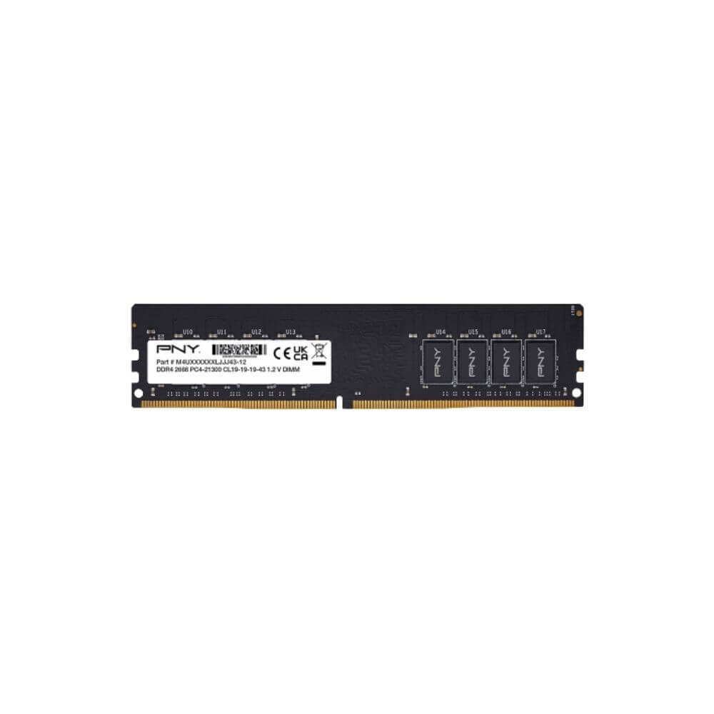
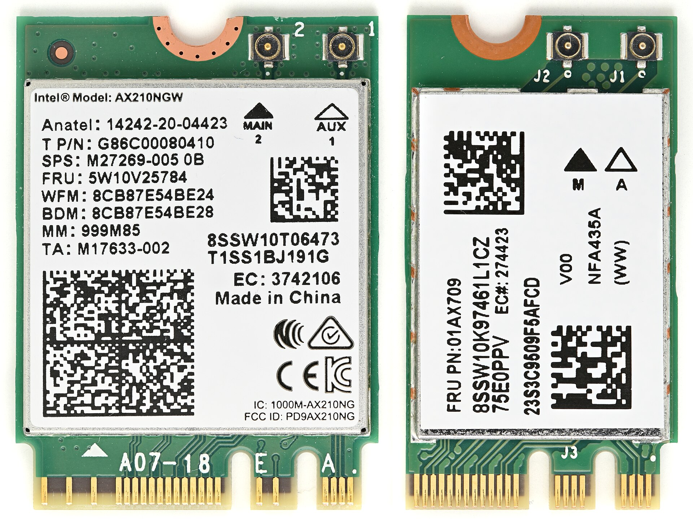
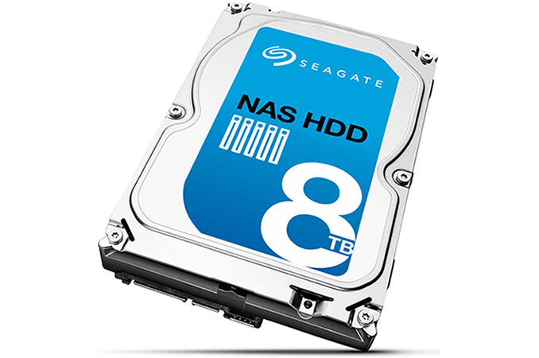
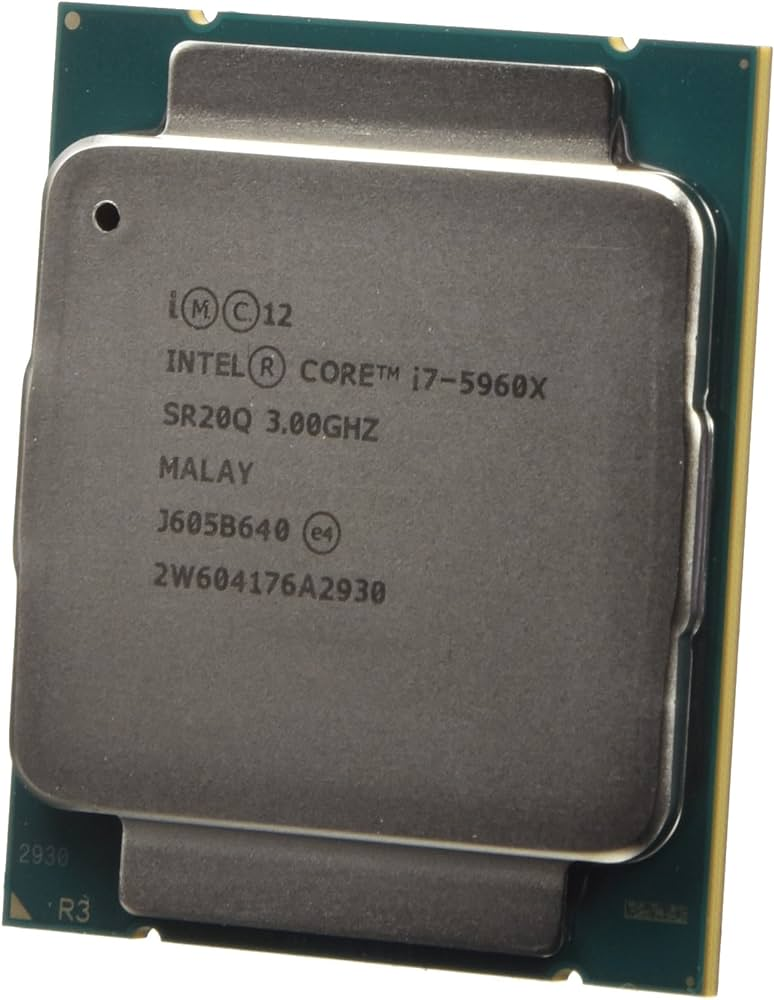
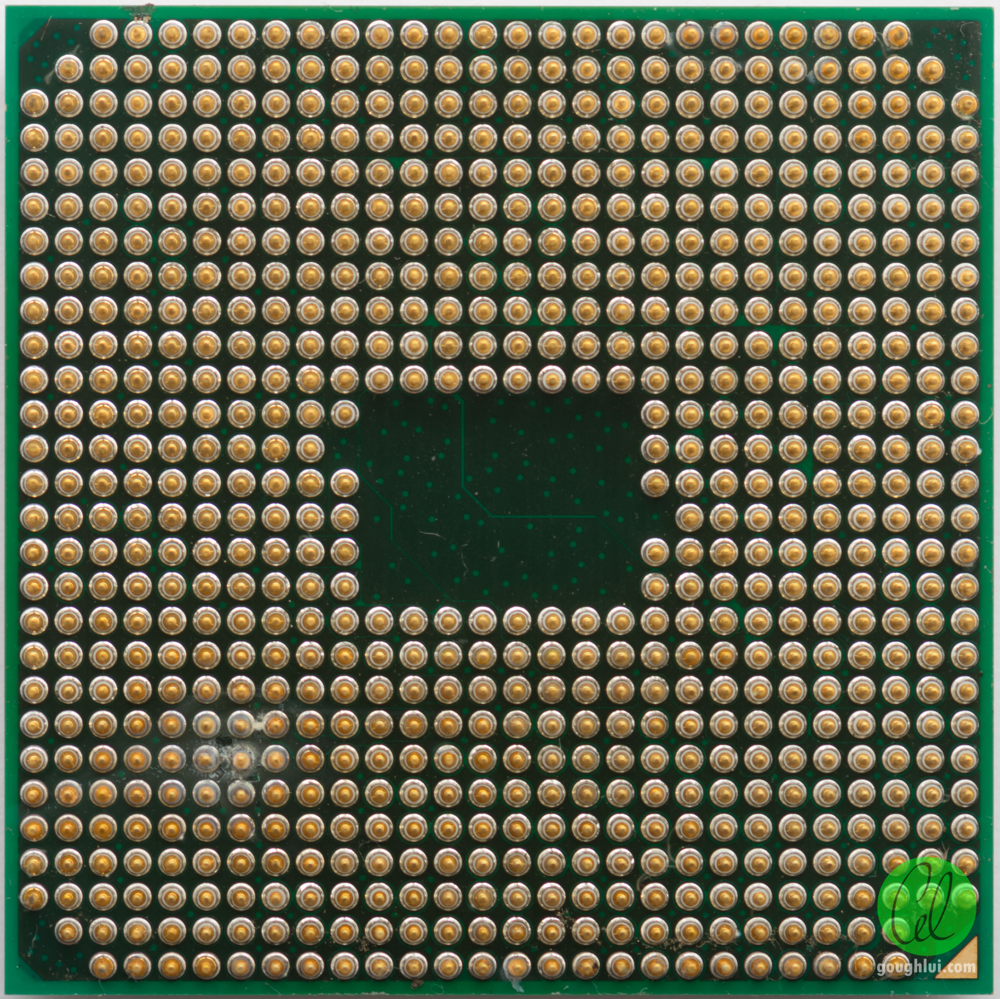
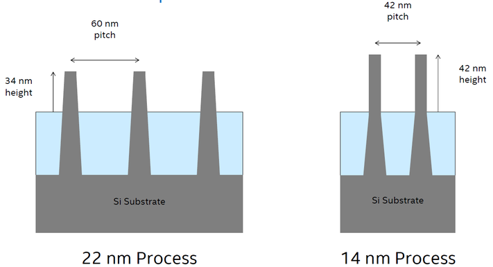

/ USB 3.1 /
USB 3.1, released in July 2013, preserves the existing SuperSpeed USB architecture and protocol with its operation mode (8b/10b symbols, 5 Gbps), giving it the label USB 3.1 Gen 1. USB 3.1 introduced an Enhanced SuperSpeed System – while preserving and incorporating the SuperSpeed architecture and protocol (aka SuperSpeed USB) – with an additional SuperSpeedPlus architecture adding and providing a new coding schema (128b/132b symbols) and protocol named SuperSpeedPlus (aka SuperSpeedPlus USB, sometimes marketed as SuperSpeed+ or SS+) while defining a new transfer mode called USB 3.1 Gen 2 with a signal speed of 10 Gbit/s and a nominal data rate of 1212 MB/s over existing Type-A, Type-B, and USB-C connections, more than twice the rate of USB 3.0 (aka Gen 1. Backward-compatibility is still given by the parallel USB 2.0 implementation. USB 3.1 Gen 2 Type-A and Type-B connectors and plugs are usually teal-colored.
/ Razer Edge Pro /
The first gaming tablet was released by Razer, named the Razer Edge Pro, on March 1, 2013. It was a tablet computer designed for playing PC games, with the power and performance to do so. It featured an Intel Core i7 processor, 8 GB RAM, 256 GB SSD, NVIDIA GeForce GT 640M 2 GB video card, and a 10.1-inch display.
/ Athlon II X2 280 /
In 2013 AMD released Athlon II X2 280 was built in the socket AM3 package (compatible with AM2/AM2+/AM3/AM3+ motherboards), and based on the company's K10.5 micro-architecture, the chip features two x86-64 cores clocked at 3.60 GHz, 1 MB of L2 cache per core (2 MB total), an instruction set that includes SSE3 and SSE4A, and a dual-channel integrated memory controller that supports both DDR2 and DDR3 memory types. The chip can take advantage of HyperTransport 3.0 interface, with a maximum data-rate of 4.0 GT/s. It features a rated TDP of 65W, and is designed for entry-level desktops.
/ Intel Haswell processors /
Intel officially announced CPUs based on this microarchitecture on June 4, 2013, at Computex Taipei 2013, while a working Haswell chip was demonstrated at the 2011 Intel Developer Forum. With Haswell, which uses a 22 nm process, Intel also introduced low-power processors designed for convertible or "hybrid" ultrabooks, designated by the "U" suffix. Haswell CPUs are used in conjunction with the Intel 8 Series chipsets, Intel 9 Series chipsets, and Intel C220 series chipsets.
/ Valve and VR /
In 2013 Valve discovered and shared the technology of low-persistence displays, making VR content lag and smear free. This was adopted by Oculus and used in all their future headsets.
/ DDR4 memory /
Double Data Rate 4 Synchronous Dynamic Random-Access Memory (DDR4 SDRAM) is a type of synchronous dynamic random-access memory with a high bandwidth ("double data rate") interface. Released to the market in 2014, it is a variant of dynamic random-access memory (DRAM), of which some have been in use since the early 1970s, and a higher-speed successor to the DDR2 and DDR3 technologies.
/ PCIe m.2 /
In 2014 was released a new PCIe standard PCIe m.2. The m.2 specification provides up to four PCI Express lanes and one logical SATA 3.0 (6 Gbit/s) port, and exposes them through the same connector so both PCI Express and SATA storage devices may exist in the form of m.2 modules.
/ First 8 terabyte drive /
In 2014 Seagate Technology introduced its new breed of hard disk drives (HDDs) for network area storage (NAS) and RAID applications. The new family of NAS HDDs from Seagate includes a model with 8 TB capacity, which is the industry’s first hard drive of such kind that is targeted towards small and medium businesses as well as personal use, i.e, 1-8 bay NAS units. Seagate’s 8 TB 3.5-inch NAS HDD is based on six perpendicular magnetic recording (PMR) platters with 1.33 TB capacity each. The hard drive features 7200 revolutions per minute spindle speed, 256 MB DRAM cache as well as a Serial ATA interface. The manufacturer declares 216 MB/s maximum sustainable media to cache transfer rate, which is considerably higher compared to previous-generation drives. The new HDD have average operating power of 9 W as well as average idle power of 7.2 W.
/ First Intel's 8-core dekstop processor /
In 2014 Intel has launched its first desktop 8-core desktop CPU - the Core i7-5960X. Based on the company's Haswell architecture the CPU is part of a trio of CPUs that use Intel's new LGA 2011-v3 socket. This isn't compatible with previous LGA 2011 CPUs, in part due to the fact that the CPUs are designed to work with new DDR4 memory and Intel's newly-released X99 motherboard chipset.
/ Socket AM1 /
Socket FS1b (rebranded as Socket AM1) is a socket designed by AMD, launched in April 2014 for desktop SoCs in the value segment. Socket AM1 is intended for a class of CPUs that contain both an integrated GPU and a chipset, essentially forming a complete SoC implementation, and as such has pins for display, PCI Express, SATA, and other I/O interfaces directly in the socket.
/ AMD A Series /
In 2014 AMD released its first Pro A series APU (accelerated processing unit) processors, the A6 Pro-7050B, A8 Pro-7150B, and A10 Pro-7350B.
/ 14nm Process /
In August 2014, Intel announced details of the 14 nm microarchitecture for its upcoming Core M processors, the first product to be manufactured on Intel's 14 nm manufacturing process.
/ IBM z13 /
The z13 is a microprocessor made by IBM for their z13 mainframe computers, announced on January 14, 2015. Manufactured at GlobalFoundries' East Fishkill, New York fabrication plant (formerly IBM's own plant). IBM stated that it is the world's fastest microprocessor and is about 10% faster than its predecessor the zEC12 in general single-threaded computing, but significantly more when doing specialized tasks.